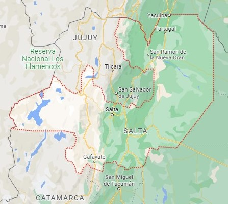
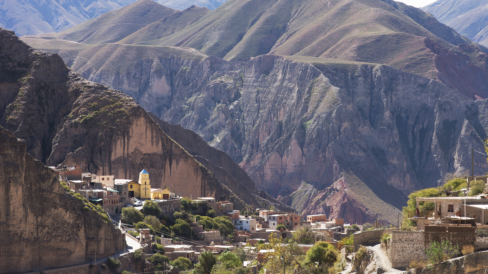
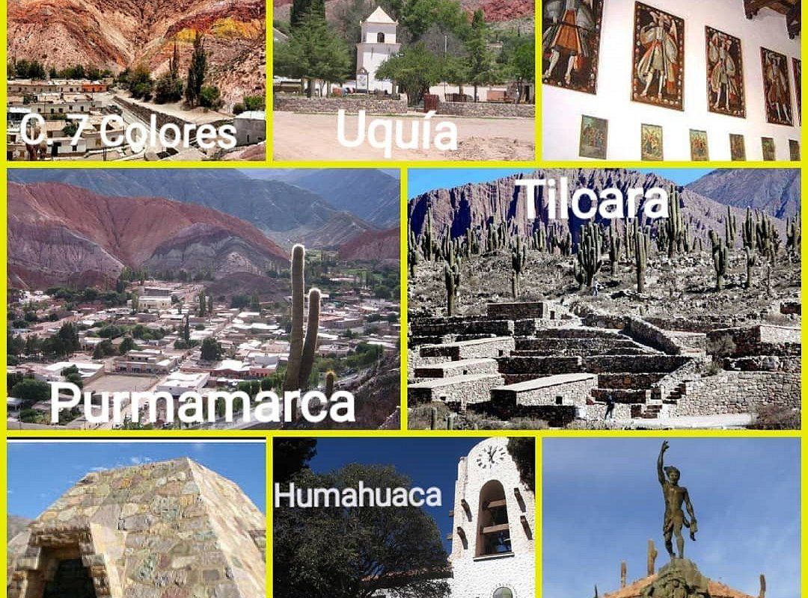
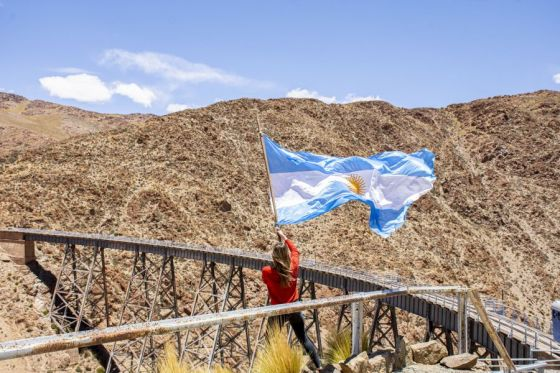

"TESORO ESCONDIDO EN EL NORTE DE ARGENTINA"
Salta, conocida como 'La Linda', es un destino que te cautivará desde el primer momento. Esta provincia en el norte de Argentina es un secreto bien guardado que te invita a explorar un mundo de maravillas en cada rincón.
Cultura y Tradición: Pero Salta no es solo naturaleza deslumbrante; es también una joya cultural. Sus pueblos coloniales te transportarán a tiempos pasados, con calles empedradas y plazas llenas de historia. La música y el folclore resuenan en cada rincón, invitándote a unirte a la celebración. En Salta, las tradiciones son parte de la vida cotidiana, y podrás sumergirte en la autenticidad de la cultura argentina.
Delicias Gastronómicas: La comida regional de Salta es una experiencia culinaria única que no te puedes perder. Cada bocado es una oportunidad para descubrir sabores auténticos que reflejan la riqueza de la región. Prueba las empanadas salteñas, la humita en chala, y disfruta de la hospitalidad de los lugareños en las peñas folclóricas.
Aventura y Naturaleza: Salta es un destino ideal para los amantes de la aventura y la naturaleza. Desde caminatas en las montañas hasta excursiones a la Quebrada del Río de las Conchas, hay muchas oportunidades para explorar la belleza natural de la provincia. No te pierdas la Quebrada del Humahuaca, declarada Patrimonio de la Humanidad por la UNESCO.
Un Tesoro Escondido: Dejáte llevar por la magia de Salta, donde la aventura, la cultura y la naturaleza se unen para crear recuerdos inolvidables. Ven y descubre por qué Salta es un tesoro escondido que no querrás dejar de explorar. Cada momento en esta provincia te llevará a un lugar nuevo y emocionante, donde la belleza y la autenticidad se entrelazan de manera única.
¡Ven y disfruta de esta tan linda provincia!